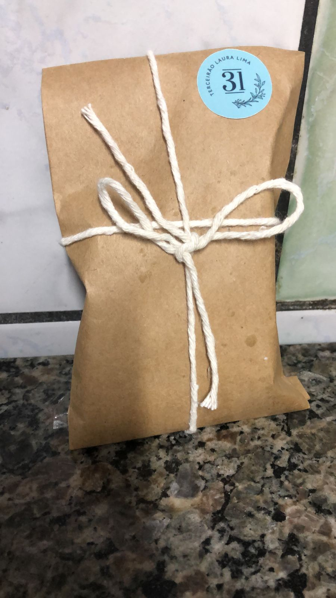
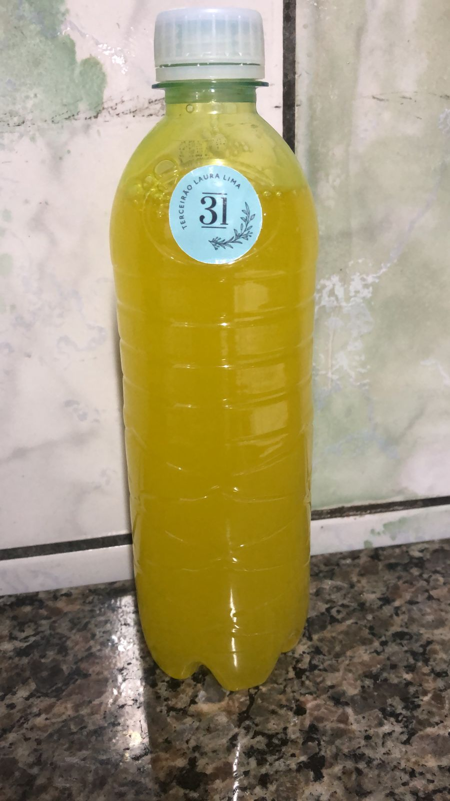
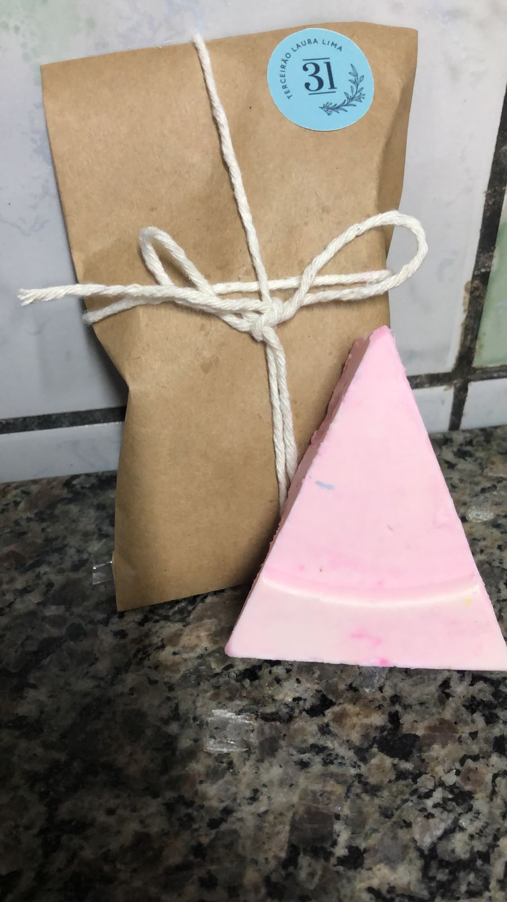

Sabonete liquido
Ingredientes:
1 barra de 100g de sabão de óleo vegetal,
200ml de água sem cloro,
60ml gel de folha,
5ml de glicerina bi-destilada,
15ml de óleo vegetal,
30 gotas de óleo essencial de sua preferência,
25 gotas de óleo essencial de malaleuca (tea tree)
Modo de preparo:
Em uma panela inox, esmaltada ou de vidro aqueça a água até ferver e então desligue o fogo,
acrescente o ácido cítrico e mexa até dissolver,
rale o sabão e adicione a mistura, mexa até dissolver completamente,
deixe esfriar,
com a mistura ainda morna adicione o restante dos ingredientes e misture bem,
despeje o sabonete líquido em uma embalagem escura, protegendo-o da luz.
Seu sabonete líquido está pronto. Recomendamos agitar a embalagem antes de usar.

Detergente
Ingredientes:
100ml de óleo,
20g de soda cáustica em escamas 99% diluída em 30ml de água,
2 colheres de água sanitária,
70ml de etanol,
1 colher de sopa de sal,
500 ml de água quente.
1.5L de água fria
Primeiro misture a soda cáustica com um pouco da água e deixe-a descansar. Enquanto isso coloque o etanol no óleo misture e já pode adicionar a água sanitária e misturar mais pouco.
Após isso pode juntar a mistura de soda cáustica com a mistura do óleo e fique mexendo até engrossar após engrossar adicione 500ml de água quente e misture até ficar homogêneo, enquanto isso coloque o sal em 500 ml de água. Agora coloque 1L de água gelada na mistura e depois os 500ml de água com sal após isso é só misturar um pouco e deixar descansar por 12 horas até engrossar e estará pronto

Sabonete em barra
>
Ingredientes:
136 gramas de soda cáustica,
304 gramas de água,
536 gramas de óleo de cozinha,
264 gramas de azeite,
corantes,
essência,
recipientes
mixer/liquidificador.
Em um primeiro momento coloca-se a soda cáustica na água, deve-se mexer até que fique bem misturado. Em outro recipiente é colocado o óleo de cozinha e o azeite. Em seguida, mistura-se a água com soda e os óleos. Só então, com ajuda do mixer ou liquidificador tudo é misturado até que fique homogêneo. Nesta etapa adiciona-se a essência e o corante desejado. Depois que tudo estiver bem uniforme, a mistura deve descansar. É recomendado desinformar o sabonete após 24 horas de descanso, no mínimo. E só usá-lo depois de 45 dias, pois é o tempo de cura do sabonete e durante este tempo ocorre uma reação química chamada saponificação.
A Saponificação é, em resumo, uma reação em que a mistura de um óleo (óleo de cozinha) com uma base (soda cáustica) resulta em um sal: o sabão. É graças ao sabonete possuir, em sua constituição, tanto substâncias polares quanto apolares, que ele é capaz de remover a oleosidade e sujeiras da epiderme.
